预备知识 套接字
什么是套接字
所谓套接字（socket），就是对网络中不同主机上的应用进程之间进行双向通信的断点 的抽象。一个套接字就是网络上进程通信的一端，提供了应用层进程利用网络协议交换数据的机制 。
socket原意是“插座”或“插孔”，在网络中每台服务器相当于一间房子，房子中有着不同的插口，每个插口都有一个编号，且负责某个功能。例如充电插口、网线插口、电话插口等。也就是说，使用不同的插口连接到对应的插口，就可以获得对应的服务。其实，插口就是socket服务，插口的编号就是端口号，而插头也是一个socket服务。
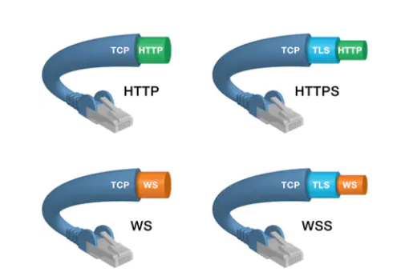
所以说，socket的含义就是两个应用程序通过一个双向的通信连接实现数据的交换，连接的一段就是一个socket，又称套接字。实现一个socket连接通信至少需要两个套接字，一个运行在服务器（插孔），一个运行在客户端（插头）
socket用于描述IP地址和端口，是一个通信链的句柄 。应用程序通过套接字向网络发出请求或应答网络请求。注意的是套接字既不是程序也不是协议，只是操作系统提供给通信层的一组抽象API接口。
C10K问题
即单机1万个并发连接问题。互联网的基础就是网络通信，最初的服务器都是基于进程/线程模型的，新到来一个TCP连接就需要分配一个进程或线程。然而，进程又是操作系统最昂贵的资源，一台机器无法创建很多的进程。
C10K问题的最大特点是，设计不够良好的程序，其性能和连接数及机器性能的关系往往是非线性的。
C10K问题本质上是操作系统的问题，对于Web1.0/2.0时代的操作系统而言，传统的同步堵塞I/O模型都是一样的，处理的方式都是Requests Per Second，并发10K和100的区别关键在于CPU。创建的进程多了，数据拷贝频繁（缓存I/O、内核将数据拷贝到用户进程空间、堵塞），进程或线程上下文切换消耗大，导致操作系统崩溃，这就是C10K问题的本质。
从纯粹网络编程技术角度来看，解决C10K问题的主要思路有两点
每个进程或线程处理一个连接，即一个是对于每个连接处理分配一个独立的线程或进程
用同一个进程或线程来同时处理若干个连接，即IO多路复用
Socket通信
Socket是应用层于TCP/IP协议簇通信的中间抽象层，是一组接口 。在设计模式中就是门面模式。Socket将复杂的TCP/IP协议簇隐藏在接口后面，对于用户而言，一组接口即可让Socket组织数据，以符合指定的协议。
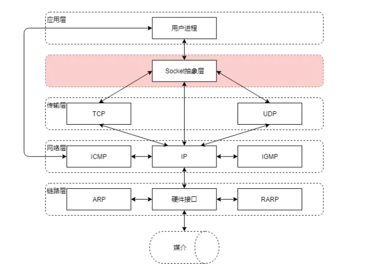
解释 ：就相当于JDBC的作用，为了让用户方便使用，在中间加了一层，简化了用户的操作，用户不在需要关心其他的
TCP/IP
Transmission Control Protocol/Internet Protocol—传输控制协议/网间协议，是一个工业标准的协议集 ，是为广域网WAN而设计的
UDP
用户数据报协议Hy pertext Transfer Protocol，是与TCP相对应得协议，属于TCP/IP协议簇得一员
HTTP
超文本传输协议 Hypertext Transfer Protocol是互联网的基础，也是手机网络协议之一，HTTP协议是建立在TCP协议之上的一种应用
Socket
**套接字是对TCP/IP协议的封装，自身并非协议而是一套调用的规范(API)**。通过套接字才能使用TCP/IP协议
套接字作为网络底层核心，也是TCP/IP以及底层协议的实现通道，他是计算机网络编程的基础，TCP/UDP收发消息都靠他 。例如web服务器底层依赖他、关系型数据库底层依赖他、微信即时通信依赖他。。。。
工作原理
服务端首先初始化Socketsocket()，然后与端口绑定bind()，再对端口进行监听listen()，接着调用accept()堵塞等待客户端连接。此时，若有一个客户端初始化了一个Socket，然后连接服务端connect()。若连接成功，此时客户端与服务端的连接就建立了。客户端发送请求write()，服务端接收请求并处理read()，然后将回应发送给客户端write()，客户端读取数据read()，最后关闭连接close()，一次交互结束。
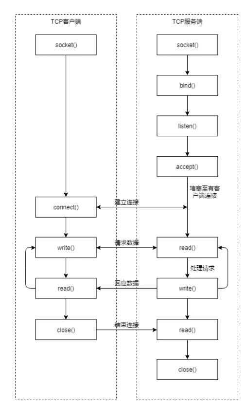
读写过程
当客户端和服务端使用TCP协议进行通信时，客户端封装一个请求对象req，将其序列化成为字节数组，然后通过套接字socket将字节数组发送到服务端，服务端通过套接字socket读取到字节数组，再反序列化成为请求对象req后进行处理，处理完毕后生成一个响应对应的res，将响应对象res序列化成字节数组，然后通过套接字将字节数组发送给客户端，客户端通过套接字socket读取到字节数组，再反序列化成为响应对象。
平时我们使用的套接字只是一个引用（一个对象ID），这个套接字对象实际是放在操作系统内核中。其内部有两个重要的缓冲结构，一个是读缓冲read buffer,一个是写缓冲write buffer,他们都是有限大小的数组结构。但对客户端的socket写入字节数组时，即序列化后的请求消息对象req，是将字节数组拷贝到内核区套接字对象的write buffer中，内核网络模块会有单独的线程负责不停地将write buffer的数据拷贝到网卡硬件，网卡硬件再将数据传送到网线，经过一系列路由器和交换机，最终送达服务器的网卡硬件中。
同样，服务端内核的网络模块也有单独的线程不停地接收到数据拷贝到套接字的read buffer中等待用户层来读取，最终服务端的用户进程通过socket引用的read()方法将read buffer中的数据拷贝到用户程序内部中，进行反序列化成请求对象req进行处理。然后服务端将处理后的相应对象，走一个相反的流程发送给客户端。
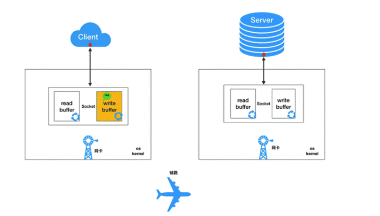
操作系统的IO模型
阻塞IO(Blocking IO)
非阻塞IO(Nonblocking IO)
I/O复用(I/O Multiplexing)
信号驱动IO(signal driven I/O)
异步IO(Asynchronous IO)
对于一个读操作来说，一般会经过下面两个过程：
等待数据就绪．比如说，对于一个网络连接来说，就是等待数据通过连接到达主机．当数据到达主机时，把数据拷贝到内核中的缓冲区．
将数据从内核拷贝到进程．即把数据从内核的缓冲区拷贝到应用程序的缓冲区．
netty介绍
netty是由jboss提供的一个由Java开源框架，现为GitHub的独立项目。
__netty是一个异步的、基于事件驱动的网络应用框架__，用以快速开发高性能、高可靠的网阔io程序
netty主要针对在tcp协议下，面向clients端的高并发应用，或者Peer-to-Peer场景下的大量数据持续传输的应用
netty本质是一个NIO框架，适用于服务器通信相关的多种应用场景
要彻底理解netty，需要先学习NIO，这样我们才能阅读netty的源码
高性能的体现
IO线程模型
使用reactor模式，同步非阻塞。这决定了可以使用最少的资源做更多的事。
内存零拷贝
使用直接缓存（Zero-copy，在操作数据时不需要将数据buffer从一个内存区域拷贝到另一个内存区域，因为少了一次内存的拷贝，因此CPU的效率就得到提升）
内存池设计
申请的内存可以重用，主要指直接内存。内部实现是用一颗二叉查找树管理内存分配情况
串行化读写
串行化处理socket读写避免锁，即一个指定socket的消息是串行化处理的。这样性能比多个线程同时处理一个socket对应消息要好，因为多线程处理会有锁
提供对protobuf等高性能序列化协议的支持
IO多路复用
IO 多路复用有三种实现，在介绍select、poll、epoll之前，首先介绍一下Linux操作系统中基础的概念 ：
用户空间和内核空间
进程切换
进程的阻塞
文件描述符
缓存 I/O
用户空间/内核空间
现在操作系统都是采用虚拟存储器，那么对32位操作系统而言，它的寻址空间（虚拟存储空间）为4G（2的32次方）。 操作系统的核心是内核，独立于普通的应用程序 ，可以访问受保护的内存空间，也有访问底层硬件设备的所有权限。(内核就是应用程序，不过他是独立于普通应用程序的，他的权限也很高)。为了保证内核的安全，操作系统将虚拟内存空间划分为了两部分，一部分内核空间，一部分用户空间。
针对linux操作系统而言，将最高的1G字节（从虚拟地址0xC0000000到0xFFFFFFFF），供内核使用，称为内核空间，而将较低的3G字节（从虚拟地址0x00000000到0xBFFFFFFF），供各个进程使用，称为用户空间。
进程切换
为了控制进程的执行，内核必须有能力挂起正在CPU运行的进程，并恢复以前挂起的某个进程的执行。这种行为称为进程切换。因此可以说，任何进程都是在操作系统内核的支持下运行的，是与内核紧密联系的，并且进程切换是非常消耗资源的。
从一个进程的运行转到另一个进程上运行，这个过程中经过下面这些变化：
保存处理机上下文，包括程序计数器和其他寄存器。
更修PCB信息
PCB ：process control block 他是进程实体的一部分，是操作系统最重要的记录性数据结构。他是进程管理和控制的最重要的数据结构，每一个进程均有一个PCB，在创建过程时，建立PCB，伴随进程运行的全过程，直到进程撤销而撤销
把进程的PCB移入相应的队列，如就绪、在某事件阻塞队列
选择另一个进程执行，更新其PCB
更新内存管理的数据结构
恢复处理机上下文
进程阻塞
正在执行的进程，由于期待的某些事件未发生，如请求系统资源失败、等待某种操作完成、新数据尚未到达或无新工作等，则由系统自动执行阻塞原语Block，使自己由运行状态变为阻塞状态。可见，进程的阻塞是进程自身的一种主动行为，也因此只有处于运行状态的进程（获得了CPU资源），才能将其转换为阻塞状态。当进入阻塞状态，是不占用系统资源的。
文件描述符
文件描述符（File descriptor）是计算机科学中的一个术语，是一个用于表述指向文件的引用的抽象化概念。文件描述符在形式上是一个非负整数。实际上，它是一个索引值，指向内核为每一个进程所维护的该进程打开文件的记录表。当程序打开一个现有文件或者创建一个新文件时，内核向进程返回一个文件描述符。在程序设计中，一些涉及底层的程序编写往往会围绕着文件描述符展开。但是文件描述符这一概念往往只适用于 UNIX、Linux 这样的操作系统。
缓存IO
缓存IO又称标准IO，大多数文件系统的默认IO都是缓存IO，在 Linux 的缓存 I/O 机制中，操作系统会将 I/O 的数据缓存在文件系统的页缓存中，即数据会先被拷贝到操作系统内核的缓冲区中，然后才会从操作系统内核的缓冲区拷贝到应用程序的地址空间。
缓存io的缺点
数据在传输过程中需要在应用程序地址空间和内核进行多次数据拷贝操作，这些数据拷贝操作所带来的CPU以及内存开销是非常大的。
什么是IO多路复用机制
多路是指网络连接，复用是指同一个线程
为什么会有IO复用机制
没有IO多路复用机制时，有BIO、NIO两种实现机制，但是他们都有一些问题
异步和同步 同步 ：就是烧开水，要自己来看开没开；
异步 ：就是水开了，然后水壶响了通知你水开了。
阻塞 ：是烧开水的过程中你不能干其他的事情（即你被阻塞住了）
非阻塞 ：是烧开水的过程里可以干其他的事情。
同步与异步说的是你获得水开了的方式不同。阻塞与非阻塞说的是你得到结果之前不能干其他的事情
同步
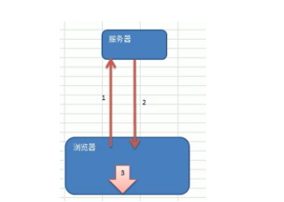
一个请求过去，必须等结果回来才可以做其他的事情
异步
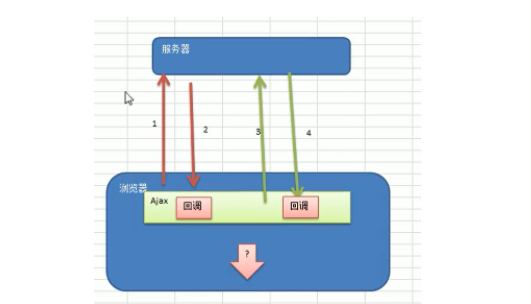
一个请求过去，不会因为服务器暂时没有返回结果而等待，反而可能是紧着这发另一条请求过去，或者紧接着执行下面的代码
netty是一个怎样的框架
netty底层依然是TCP/IP协议
在上一层包了一个JDK原生的IO和网络
在上一层是一个NIO的IO和网络
最上面一层才是netty
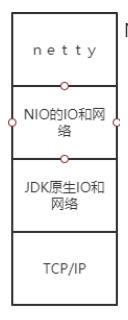NIO对Java的IO进行了封装和优化，然后netty对 NIO有进行了封装和优化
java IO编程
I/O模型基本说明
I/O模型简单来说就是用什么样的通道进行数据的发送和接收，很大程度上决定了程序通信的性能
Java共支持三种网络编程模型/IO模式：BIO、NIO、AIO
Java BIO：同步并阻塞（传统阻塞型），服务器实现模式为一个链接一个线程，及客户端由链接请求时服务器会启动一个线程进行处理，如果这个链接不做任何事情就会造成不必要的线程开销(适用于链接数目比较少且固定的架构 .)
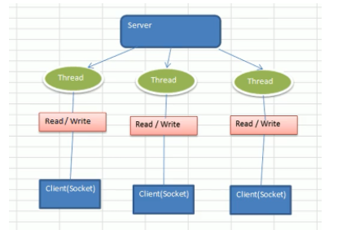
java NIO: 同步非阻塞,服务器实现模式为一个线程处理多个请求,即客户端发送的连接请求都会注册到多路复用器上,多路复用器轮询到链接由I/O请求就进行处理__适用于连接数目比较多且连接时间比教短,,轻操作__
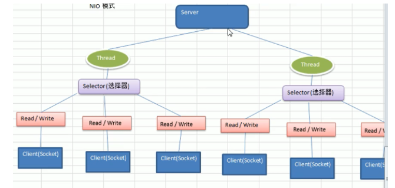
Java AIO(NIO.2): 异步非阻塞,AIO引入异步通道的概念,采用了Proactor模式,简化了程序 的编写,有效的请求才会请求起动线程,他的特点九是先由操作系统完成后才会通知服务器程序启动线程处理,一般适合于链接数较多,时间较长的应用.
适用于连接数目多,且连接比较长,,,重操作
javaBIO工作机制
服务器端启动一个ServerSocket
客户端启动Socket对服务器进行通讯，默认情况下服务器需要对每个客户建立一个线程与之通信
客户端发出请求后，先咨询服务器是否有线程响应，如果没有则会等待或者遭到拒绝
如果有响应客户端的线程会等待请求结束后才继续执行
java NIO基本介绍
Java NIO全称Java non-blocking IO，是指JDK提供的新API。从JDK1.4开始，就Java提供了尊贵的输入/输出的新特性，被普遍NIO（即NewIO），是同步非阻塞的。
NIO相关类都被提包**java.nio**及子包下，并且对原java.io包中的很多类进行改写。
NIO有三大核心部分： Channel（绳索）、Buffer（绳索）、Selector（选择器）。
NIO是采集的，或者汇总块的编制的。可以读取到一段时间的数据，需要在中后期移动，需要增加了处理过程中的数据，使用它可以非编程的一个式的高伸缩性网络。
NIO是面向缓冲区，或者面向块编程的。数据读取到一个它稍后处理的缓冲区，需要时可以在缓冲区前后移动，
这就增强了处理的灵活性，使他可以提供非阻塞是的高伸缩性网络
NIO三大核心原理
每一个channel都会对应一个Buffer
Selector对应一个线程，一个线程对应多个channel连接
多个channel可以注册到同一个selector
程序切换到哪一个channel是由事件决定的，event就是一个重要的概念
selector会根据不同的事件在各个通道上切换
Buffer就是一个内存块，底层是有一个数组
数据的读取写入是通过Buffer，这个和BIO，BIO中要么是输入流，或者是输出流，不能双向，但是NIO的buffer是可以读写的，需要flip方法切换
channel是双向的，可以返回底层操作系统的情况，比如Linux，底层的操作系统通道就是双向的。
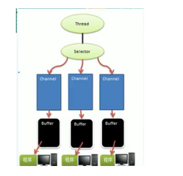
NIO和BIO的比较
BIO以流的方式处理数据，而NIO以块的方式处理数据，块IO的效率比流IO高很多
BIO是阻塞的，NIO是非阻塞的
BIO基于字节流和字符流进行操作，而NIO基于channel（通道）和buffer（缓冲区）进行操作，数据总是从通道读取到缓冲区中，或者从缓冲区写入通道中。Selector选择器用于就按听多个通道的事件。比如连接请求，数据到达等，因此使用单线程就可以监听多个客户端通道。
缓冲区的基本介绍 buffer：缓冲区本质上是一个可以读写的内存块，可以理解成是一个容器数组（含数组）该对象提供了一组方法可以轻松的使用内存块。
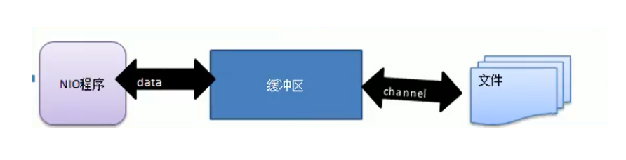
buffer类定义了所有的缓冲区都具有的四个属性来提供关于其所包含的数据元素的信息：
容量：可以容纳的最大数据量
limit：表示缓冲区的当前终点，不能对缓冲区超过极限的位置进行读写操作
position：位置，下一个要被读或写的元素索引
mark：标记
通道channel
基本介绍
NIO的通道类似于流，但是有些区别
通道可以同时进行读写，而流只能读或者写
通道可以实现异步读写数据
通道可以从缓冲读取数据，也可以写数据到缓冲
channel基本使案例 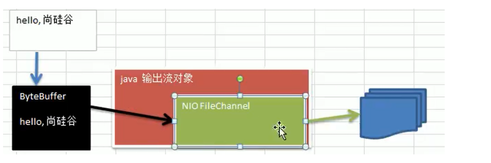
public class NIOFileChannel01 {public static void main (String[] args) throws IOException {ByteBuffer byteBuffer = ByteBuffer.allocate(1024 );String str = "Hi! Dean" ;FileOutputStream fileOutputStream = new FileOutputStream ("D:\\file0..txt" );FileChannel fileOutputStreamChannel = fileOutputStream.getChannel();int write = fileOutputStreamChannel.write(byteBuffer);
通过一个Stream获取Channel
本地文件读 1 2 3 4 5 6 7 8 9 10 11 12 13 14 15 16 17 18 public class NIOFileChannel {public static void main (String[] args) throws IOException {File file = new File ("D:\\file01.txt" );FileInputStream fileInputStream = new FileInputStream (file);FileChannel inputChannle = fileInputStream.getChannel();ByteBuffer byteBuffer = ByteBuffer.allocate((int )file.length());new String (byteBuffer.array()));
用一个buffer实现文件备份 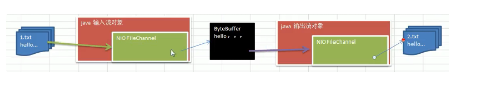
1 2 3 4 5 6 7 8 9 10 11 12 13 14 15 16 17 18 19 20 21 22 23 24 public class NIOFileChannel03 {public static void main (String[] args) throws IOException {File file = new File ("C:\\Users\\Lenovo\\.ssh\\id_rsa.pub" );FileInputStream fileInputStream = new FileInputStream (file);FileChannel fileInputStreamChannel = fileInputStream.getChannel();ByteBuffer byteBuffer = ByteBuffer.allocate((int ) file.length());int read = fileInputStreamChannel.read(byteBuffer);FileOutputStream fileOutputStream = new FileOutputStream ("D:\\file02.txt" );FileChannel fileOutputStreamChannel = fileOutputStream.getChannel();int write = fileOutputStreamChannel.write(byteBuffer);
使用transferFrom复制 1 2 3 4 5 6 7 8 9 10 11 12 13 14 15 16 17 public class NIOFileChannel04 {public static void main (String[] args) throws IOException {FileInputStream fileInputStream = new FileInputStream ("D:\\download\\rww02.jpg" );FileOutputStream fileOutputStream = new FileOutputStream ("D:\\download\\rww02_1.jpg" );FileChannel fileInputStreamChannel = fileInputStream.getChannel();FileChannel fileOutputStreamChannel = fileOutputStream.getChannel();
Buffer和channel的注意细节
ByteBuffer支持类型化的put和get，put放入的是什么数据类型，get就应该使用相应的数据类型取出来。否则可能有bufferUnderflowException异常
可以将一个普通的Buffer转成只读Buffer
NIO还提供了MappedByteBuffer，可以让文件直接在堆外的内存终进行修改，而如何同步到文件由NIO来完成
NIO还支持通过多个buffer即buffer数组来完成读写操作。
buffer数组
前面都是通过一个buffer完成的读写操作，NIO还支持多个buffer完成读写操作即 Scattering和Gathering
1 2 3 4 5 6 7 8 9 10 11 12 13 14 15 16 17 18 19 20 21 22 23 24 25 26 27 28 29 30 31 32 33 34 35 36 37 38 39 40 41 42 43 44 45 46 47 48 public class ScatteringAndGatheringTest {public static void main (String[] args) throws IOException {ServerSocketChannel serverSocketChannel = ServerSocketChannel.open();InetSocketAddress inetSocketAddress = new InetSocketAddress (7000 );new ByteBuffer [2 ];0 ] = ByteBuffer.allocate(5 );1 ] = ByteBuffer.allocate(3 );SocketChannel accept = serverSocketChannel.accept();int maxlength = 8 ;while (true ){int byteRead = 0 ;while (byteRead < maxlength){long read = accept.read(byteBuffer);"byteread=" +byteRead);"position=" +buffer.position()+"limit=" +buffer.limit())long byteWrite = 0 ;while (byteWrite < maxlength){long write = accept.write(byteBuffer);"byteRead=" + byteRead + "byteWrite=" + byteWrite + "maxLength=" + maxlength);
MappedByteBuffer
可以直接操作内存（堆外的内存）操作系统级
1 2 3 4 5 6 7 8 9 10 11 12 13 14 15 16 17 18 public class MappedByteBufferTest {public static void main (String[] args) throws IOException {RandomAccessFile randomAccessFile = new RandomAccessFile ("D:\\file01.txt" , "rw" );FileChannel randomAccessFileChannel = randomAccessFile.getChannel();MappedByteBuffer mappedByteBuffer = randomAccessFileChannel.map(FileChannel.MapMode.READ_WRITE, 0 , 5 );0 , (byte ) 'x' );1 , (byte ) 'b' );
Selector
基本介绍
Java的NIO，用非阻塞的IO方式。可以用一个线程，处理多个客户端连接。就会用到selector
Selector能够检测多个注册的通道上是否有事件发生。（多个通道以事件的方式注册到同一个selector），如果有事件发生，便获取事件然后对每个事件进行相应的处理。这样就可以用一个单线程去管理多个通道，也就是管理多个通道与连接。
只有在连接有真正读写操作时，才会进行读写，就大大的减少了系统的开销，并且不必为每个连接就都创建一个线程，不用去维护多个线程。
避免了多线程的上下文切换，减少了时间开销。
注意事项
NIO中的ServerSocketChannel功能类似ServerSocket,SocketChannel功能类似Socket
selector相关方法说明
selector.select()//阻塞
selector.scelect(1000)//阻塞1000毫秒，在1000后返回
selector.wakeup()//唤醒selector
selector.selectNow();//不阻塞立马返回
NIO非阻塞网络编程原理分析图 NIO非阻塞网络编程相关的Selector SelectionKey ServerScoketChannel和SocketChannel关系梳理图
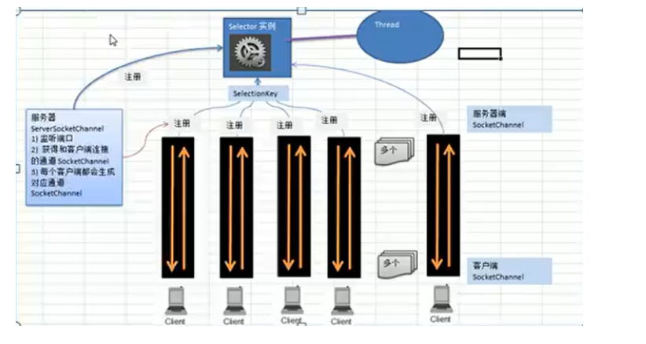
说明
当客户端连接时，会通过一个ServerSocketChannel得到一个SocketChannel
将socketChannel注册到Selector上register(Selector sel,int ops),一个selector上可以注册多个Socketchannel
注册后返回一个Selectionkey,会和该Selector关联（集合）
Selector进行监听，select方法有事件发生的通道的个数
进一步得到各个Selectionkey有时间发生的
再通过selectionKey反向获取SocketChannel channel()
可以通过得到的channel完成业务处理
1 2 3 4 5 6 7 8 9 10 11 12 13 14 15 16 17 18 19 20 21 22 23 24 25 26 27 28 29 30 31 32 33 34 35 36 37 38 39 40 41 42 43 44 45 46 47 48 49 50 51 52 53 54 55 56 57 public class NIOServer {public static void main (String[] args) throws IOException {ServerSocketChannel serverSocketChannel = ServerSocketChannel.open();Selector selector = Selector.open();new InetSocketAddress (6667 ));false );while (true ){if (selector.select(1000 ) == 0 ){"没有任何连接请求！！！" );continue ;while (selectionKeyIterator.hasNext()){SelectionKey selectionKey = selectionKeyIterator.next();if (selectionKey.isAcceptable()){SocketChannel socketChannel = serverSocketChannel.accept();"客户端连接成功生成了以一个channel" + socketChannel.hashCode());false );1024 ));if (selectionKey.isReadable()){SocketChannel socketChannel = (SocketChannel) selectionKey.channel();ByteBuffer buffer = (ByteBuffer)selectionKey.attachment();"from 客户端" + new String (buffer.array()));
Client
1 2 3 4 5 6 7 8 9 10 11 12 13 14 15 16 17 18 19 20 21 22 23 24 public class NIOClient {public static void main (String[] args) throws Exception {SocketChannel socketChannel = SocketChannel.open();false );InetSocketAddress inetSocketAddress = new InetSocketAddress ("127.0.0.1" , 6667 );if (!socketChannel.connect(inetSocketAddress)){while (!socketChannel.finishConnect()){"因为连接需要时间客户端不会阻塞，可以做其他事情！！！！" );String str = "Hi! Dean" ;ByteBuffer byteBuffer = ByteBuffer.wrap(str.getBytes ());
SelectionKey SocketChannel向Selector注册成功后，Selector返回一个SelectionKey,可以通过selectionKey反向获取SocketChannel
selector维护着三个selection keys集合
key,包含着所有的selectionKey，当前所有注册到selector中的channel返回的注册关系selectionKey都包含在内，这个集合可以通过selector.keys()方法返回。
selectedKey，包含着一部分selectionKey，其中每一个Selectionkey所关联的channel在selection operation期间被检测出至少准备好了一个可以在兴趣集中匹配到的操作 。这个集合可以通过调用selector.selectedKeys()方法返回。selected key 一定是key的一个子集
cancelled key也包含着一部分selectionKey，其中的每个selectionKey都已经被取消，但是所关联的channel还没有被撤销登记。cancelled key不能够被直接返回但也一定是key 的子集
SeverSocketChannel
监听新进来的TCP连接通道
创建新的SocketChannel
ServerSocketChannel并不具备数据传输能力
创建ServerSocketChannel
1 2 ServerSocketChannel serverSocketChannel = ServetSocketChannel.open();
为ServerSocketChannel绑定监听端口号
JDK1.7前，需要调用ServerSocketChannel的socket方法，再调用bind()来进行关联
JDK1.7后，就可以直接调用ServerSocketChannel的bind()来进行端口绑定了。
ServerSocketChannel如何监听新进来的连接
通过ServerSocketChannel.accept()方法进行监听新进来的连接
ServerSocketChannel默认是阻塞模式
在阻塞模式下：
如果有新的连接进来，那么accept（）方法返回的是一个包含新进来的连接的SocketChannel，如果没有新的连接，那么accept（）方法就会一直阻塞在这里，直到有新的连接进来
在非阻塞模式下：
如果有新的连接进来，那么accept方法返回的是一个包含新进来的连接的SocketChannel
如果没有新的连接，那么accept方法就会立即返回null。
SocketChannel
SocketChannel,网络IO通道，具体负责进行读写操作。NIO把缓冲区的数据写入通道，或者把通道里的数据读到缓冲区
与ServerSocketChannel的区别，ServerSocketChannel在服务器端监听新的客户端Socket连接而SocketChannel则是负责正常的读写操作，以及其他的一些业务。
创建SocketChannel的方式
1 2 3 4 5 1. 在客户端创建SocketChannel socketChannel = SocketChannel.open()2. 在服务器端创建SocketChannel socketChannel = ServerSocketChannel.accept();
将管道中的数据读取到缓存里。用的是SocketChannel的read()方法
1 int count = socketChannel.read(sizeBuffer);
将缓存里的数据写到管道里
1 socketChannel.write(sizeBuffer);
相关方法
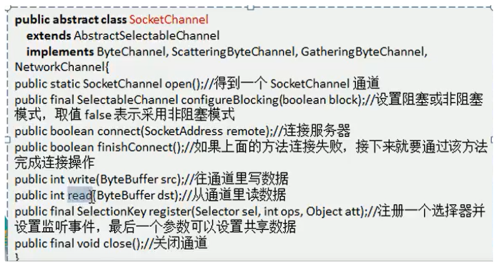
NIO网络编程应用实例-群聊系统 实例要求
编写一个NIO的群聊系统，实现服务器端和客户端之间的数据简单通讯（非阻塞）
实现多人在线群聊
服务器端：可以监测用户上线，离线并实现消息转发功能
客户端：通过channel可以无阻塞发送消息给其他所有用户，同时可以接受其他用户发送的信息
目的：进一步理解NIO非阻塞网络编程机制。
实现思路
先编写服务器端
服务器端启动并监听6667
服务器接收客户端信息，并实现转发，同时实现上线离线提示
编写客户端
相关代码 服务端
1 2 3 4 5 6 7 8 9 10 11 12 13 14 15 16 17 18 19 20 21 22 23 24 25 26 27 28 29 30 31 32 33 34 35 36 37 38 39 40 41 42 43 44 45 46 47 48 49 50 51 52 53 54 55 56 57 58 59 60 61 62 63 64 65 66 67 68 69 70 71 72 73 74 75 76 77 78 79 80 81 82 83 84 85 86 87 88 89 90 91 92 93 94 95 96 97 98 99 100 101 102 103 104 105 106 107 108 109 package com.dean.nio.GroupChat;import java.io.IOException;import java.net.InetSocketAddress;import java.nio.ByteBuffer;import java.nio.channels.*;import java.util.Iterator;public class GroupChatServer {private Selector selector;private ServerSocketChannel listenChannel;private static final int port = 6667 ;public GroupChatServer () {try {new InetSocketAddress (port));false );catch (IOException e) {public void listen () {try {while (true ){if (selector.select()>0 ){while (keyIterator.hasNext()){SelectionKey key = keyIterator.next();if (key.isAcceptable()){SocketChannel socketChannel = listenChannel.accept();false );"上线" );if (key.isReadable()){catch (Exception e){finally {public void readData (SelectionKey selectionKey) throws IOException {SocketChannel socketChannel = null ;try {ByteBuffer byteBuffer = ByteBuffer.allocate(1024 );int read = socketChannel.read(byteBuffer);if (read > 0 ){String msg = new String (byteBuffer.array());"form Client:" +msg);catch (IOException e){"离线了..." );public void send (String msg,SocketChannel self) throws IOException {"转发信息中..." );for (SelectionKey key: selector.keys()) {Channel channel = key.channel();if (channel instanceof SocketChannel && channel != self){SocketChannel socketChannel = (SocketChannel) channel;ByteBuffer byteBuffer = ByteBuffer.wrap(msg.getBytes());int write = socketChannel.write(byteBuffer);public static void main (String[] args) {GroupChatServer groupChatServer = new GroupChatServer ();
client
1 2 3 4 5 6 7 8 9 10 11 12 13 14 15 16 17 18 19 20 21 22 23 24 25 26 27 28 29 30 31 32 33 34 35 36 37 38 39 40 41 42 43 44 45 46 47 48 49 50 51 52 53 54 55 56 57 58 59 60 61 62 63 64 65 66 67 68 69 70 71 72 73 74 75 76 77 78 79 80 81 82 83 84 85 86 87 88 89 package com.dean.nio.GroupChat;import java.io.IOException;import java.net.InetSocketAddress;import java.nio.ByteBuffer;import java.nio.channels.SelectionKey;import java.nio.channels.Selector;import java.nio.channels.SocketChannel;import java.util.Iterator;import java.util.Scanner;public class GroupChatClient {private final String HOST = "127.0.0.1" ;private final int PORT = 6667 ;private Selector selector;private SocketChannel socketChannel;private String userName;public GroupChatClient () throws IOException {this .socketChannel.open(new InetSocketAddress (HOST, PORT));false );1 );"is ok" );public void send (String msg) {"说:" + msg;try {catch (IOException e) {public void read () {try {int i = selector.select();if (i > 0 ){while (iterator.hasNext()){SelectionKey selectionKey = iterator.next();if (selectionKey.isReadable()){SocketChannel channel = (SocketChannel) selectionKey.channel();ByteBuffer byteBuffer = ByteBuffer.allocate(1024 );int read = channel.read(byteBuffer);String s = new String (byteBuffer.array());catch (Exception e){public static void main (String[] args) throws IOException {GroupChatClient chatClient = new GroupChatClient ();new Thread (){@Override public void run () {while (true ){try {3000 );catch (InterruptedException e){Scanner scanner = new Scanner (System.in);while (scanner.hasNextLine()){String s = scanner.nextLine();
NIO与零拷贝
零拷贝是网络编程的关键，很多性能优化都离不开
在Java程序中，常用的零拷贝有mmap（内存映射）和sendFile。
再次理解
我们说零拷贝是从操作系统的角度来说的。因为内核缓冲区之间，没有数据是重复的（只有kernel buffer有一份数据）
零拷贝不仅仅带来更少的数据复制，还能带来其他的性能优势，例如更少的上下文切换，更少的CPU缓存伪共享以及无CPU校验和计算
mmap和sendFile的区别
mmap适合小数据量读写，sendFile适合大文件传输
mmap需要4次上下文切换，3次数据拷贝；sendFile需要3次上下文切换，最少两次数据拷贝
sendFile可以利用DMA方式减少CPU拷贝，mmap则不能，必须从内核拷贝到socket缓冲区。
Reactor模式 I/O复用结合线程池 就是Reactor模式基本设计思想
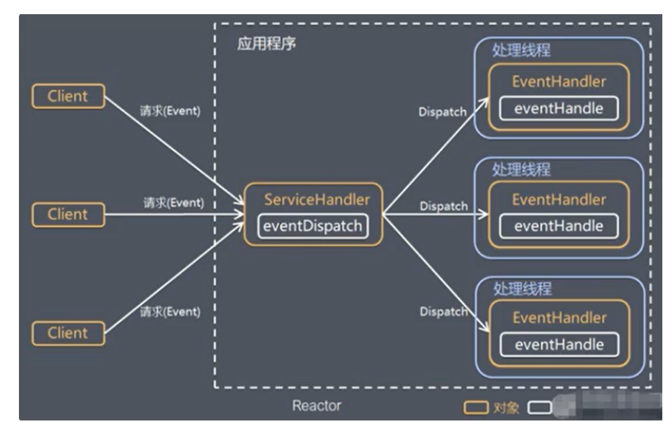
说明 ：
Reactor模式，通过一个或多个输入同时传递给服务处理器的模式（基于事件驱动）
服务器端程序处理传入的多个请求，并将他们同步分派到相应的处理线程，因此Reactor模式也叫Dispatcher模式
Reactor模式使用IO复用监听事件，收到事件后，分发给某个线程（进程），这点就是网络服务器高并发处理关键
Reactor模式中核心组成
Reactor：Reactor在一个单独的线程中运行，负责监听和分发事件，分发给适当的处理程序来对IO事件做出反应。他就像电话接线员，也像是外卖平台，处理线程像是外卖员，外卖平台负责接收请求并分发给外卖员。一个Reactor就相当于是一个eventDispatch
Handlers: 处理程序执行IO事件要完成的实际事件，类似于客户想要阈值交谈的公司中的实际官员。Reactor通过调度适当的处理程序来响应IO事件，处理程序执行非阻塞操作。
Reactor模式分类
根据Reactor的数量和处理资源池线程的数量不同，有三种典型的实现
单Reactor单线程
单Reactor多线程
主从Reactor多线程
单Reactor多线程
方案优缺点分析
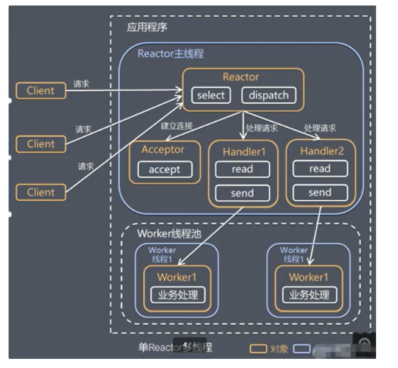
优点 ：可以充分利用多核CPU的处理能力
缺点 ：多线程数据共享和访问比较复杂，reactor处理所有的事件的监听和响应，在单线程运行，在高并发场景容易出现性能瓶颈。
主从Reactor多线程
工作原理示意图：
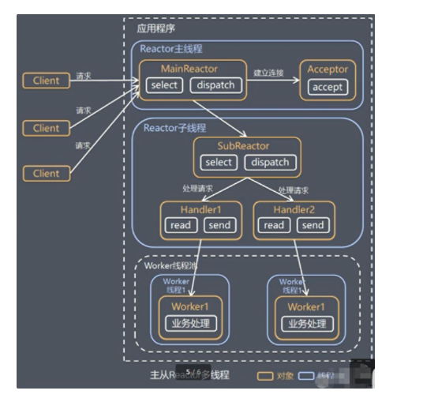
针对单Reactor多线程模型中，Reactor在单线程中运行，高并发场景下容易成为性能瓶颈，可以让Reactor在多线程中运行
方案说明
Reactor主线程MainReactor对象通过select监听连接事件，收到事件后，通过Acceptor处理连接事件
当Acceptor处理连接事件后，MainReactor将连接分配给SubReactor
subreactor将连接加入到连接队列进行监听，并创建handler进行各种事件处理
当有新的事件发生时，subreactor就会调用对应的handler进行处理
handler通过read读取数据，分发给后面worker线程处理
worker线程池分配独立的worker线程进行业务处理，并返回结果
handler收到响应的结果后再通过send方法将结果返回给client
Reactor主线程可以对应多个Reactor子线程，即MainReactor可以关联多个subreactor
Netty模型 Netty主要基于主从Reactors多线程 模型做了一定得改进，其中主从Reactor多线程模型有多个Reactor
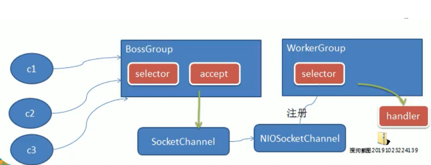
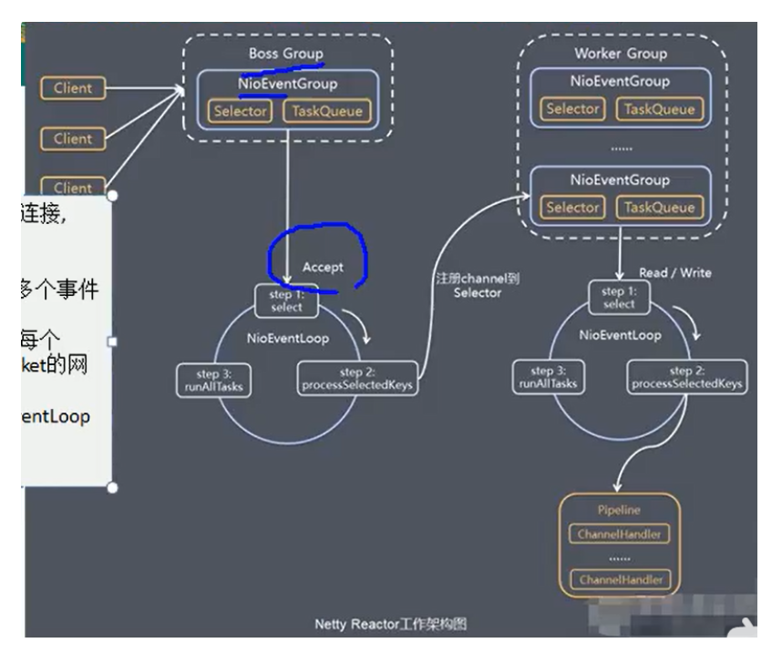
说明 ：
netty抽象出两组线程池BossGroup专门负责接收客户端的连接，WorkerGroup专门负责网络的读写
Bossgroup 和Workergroup类型都是NIOEventLoopGroup
NioEventGroup相当于是一个事件循环组，这个组中包含多个事件循环。每一个事件循环是一个NioEventLoop。
NioEventLoop表示一个不断循环的执行处理任务的线程，每一 个NioEventLoop有一个selector，用于监听绑定在其上的socket的网路通讯。
NioEventGroup 可以有多个线程，即可以有多个NioEventLoop
每个boss NioEventLoopGroup循环执行的步骤有三步：
轮询accept事件
处理accept事件，生成NioSocketChannel,并将其注册到Worker NioEventLoop上的selector
处理任务队列的任务，即runAllTask
每个worker NioeventLoop循环执行的步骤
轮询write、read事件
处理i/o事件，即read/write事件，在对应的NioSocketChannel上处理
处理任务队列的任务，即runAllTasks
每个work NioEventLoop处理业务时，会使用pipeline（管道）进行一系列的任务的处理。pipeline里面包含了channel，即可以通过pipeline获取到channel,管道中维护了很多的处理器。
Channel 和 Pipeline
Channel 是通讯的载体，而ChannelHandler是负责Channel中的逻辑处理
ChannelPipeline可以理解为ChannelHandler的容器ch.pipeline().addLast(new NettyClientHandler());一个Channel包含一个ChannelPipeline,所有的ChannelHandler都会注册到ChannelPipeline中，并按顺序组织起来。
TCP 模型 NettyServer
1 2 3 4 5 6 7 8 9 10 11 12 13 14 15 16 17 18 19 20 21 22 23 24 25 26 27 28 29 30 31 32 33 34 35 36 37 38 39 40 41 42 43 44 45 46 47 48 49 50 51 52 53 package com.dean.netty.simple;import io.netty.bootstrap.ServerBootstrap;import io.netty.channel.ChannelFuture;import io.netty.channel.ChannelInitializer;import io.netty.channel.ChannelOption;import io.netty.channel.nio.NioEventLoopGroup;import io.netty.channel.socket.SocketChannel;import io.netty.channel.socket.nio.NioServerSocketChannel;public class NettyServer {public static void main (String[] args) throws InterruptedException {NioEventLoopGroup bossGroup = new NioEventLoopGroup ();NioEventLoopGroup workerGroup = new NioEventLoopGroup ();try {ServerBootstrap bootstrap = new ServerBootstrap ();128 )true )new ChannelInitializer <SocketChannel>() {@Override protected void initChannel (SocketChannel ch) throws Exception {new NettyServerHandler ());" server is ready! " );ChannelFuture cf = bootstrap.bind(6668 ).sync();finally {
NettyServerHandler
1 2 3 4 5 6 7 8 9 10 11 12 13 14 15 16 17 18 19 20 21 22 23 24 25 26 27 28 29 30 31 32 33 34 35 36 37 38 39 40 41 42 43 44 45 46 47 48 49 50 51 52 53 54 55 package com.dean.netty.simple;import io.netty.buffer.ByteBuf;import io.netty.buffer.Unpooled;import io.netty.channel.ChannelHandlerContext;import io.netty.channel.ChannelInboundHandlerAdapter;import io.netty.util.CharsetUtil;public class NettyServerHandler extends ChannelInboundHandlerAdapter {@Override public void channelRead (ChannelHandlerContext ctx, Object msg) throws Exception {"Server ctx=" + ctx);"server read thread" + Thread.currentThread().getName());ByteBuf buf = (ByteBuf) msg;"客户端发送的消息是：" + buf.toString(CharsetUtil.UTF_8));"客户端地址：" + ctx.channel().remoteAddress());@Override public void channelReadComplete (ChannelHandlerContext ctx) throws Exception {"hello client! " ,CharsetUtil.UTF_8));@Override public void exceptionCaught (ChannelHandlerContext ctx, Throwable cause) throws Exception {
NettyClient
1 2 3 4 5 6 7 8 9 10 11 12 13 14 15 16 17 18 19 20 21 22 23 24 25 26 27 28 29 30 31 32 33 34 35 36 37 38 39 40 41 42 43 package com.dean.netty.simple;import io.netty.bootstrap.Bootstrap;import io.netty.channel.ChannelFuture;import io.netty.channel.ChannelInitializer;import io.netty.channel.EventLoopGroup;import io.netty.channel.nio.NioEventLoopGroup;import io.netty.channel.socket.SocketChannel;import io.netty.channel.socket.nio.NioSocketChannel;public class NettyClient {public static void main (String[] args) throws InterruptedException {EventLoopGroup eventExecutors = new NioEventLoopGroup ();try {Bootstrap bootstrap = new Bootstrap ();new ChannelInitializer <SocketChannel>() {@Override protected void initChannel (SocketChannel ch) throws Exception {new NettyClientHandler ());"client is ok.." );ChannelFuture channelFuture = bootstrap.connect("127.0.0.1" , 6668 ).sync();finally {
NettyClientHandler
1 2 3 4 5 6 7 8 9 10 11 12 13 14 15 16 17 18 19 20 21 22 23 24 25 26 27 28 29 30 31 32 33 34 35 36 37 38 39 40 41 42 43 44 45 46 package com.dean.netty.simple;import io.netty.buffer.ByteBuf;import io.netty.buffer.Unpooled;import io.netty.channel.ChannelHandlerContext;import io.netty.channel.ChannelInboundHandlerAdapter;import io.netty.util.CharsetUtil;public class NettyClientHandler extends ChannelInboundHandlerAdapter {@Override public void channelActive (ChannelHandlerContext ctx) throws Exception {"client " + ctx);"hello server " , CharsetUtil.UTF_8));@Override public void channelRead (ChannelHandlerContext ctx, Object msg) throws Exception {ByteBuf byteBuf = (ByteBuf) msg;"服务器回复的消息是： " + byteBuf.toString(CharsetUtil.UTF_8));"服务器的地址是：" + ctx.channel().remoteAddress());@Override public void exceptionCaught (ChannelHandlerContext ctx, Throwable cause) throws Exception {
异步模型
基本介绍
异步的概念和同步相对。当一个异步过程调用发出后，调用者不会立刻得到结果。实际处理这个调用的组件在完成后，通过状态、通知、回调来通知调用者
Netty的I/O操作就是异步的，包括Bind、write、connect等操作会简单的返回一个ChannelFuture.
调用者不能立刻获得结果，而是通过Future-Listener机制，用户可以方便的主动获取或者通过通知机制获得I/O操作结果。
Netty的异步模型是建立在future和callback之上的。callback就是回调。重点说future，他的核心思想是：假设一个方法fun，计算过程可能耗时，等待fun返回显然不合适，那么可以调用fun的时候，立马返回一个Feture，后续可以通过Future去监控方法fun的处理过程即Future-Listener机制
Future 说明
表示异步执行的结果，可以通过它提供的方法来检测执行是否结束，比如检索计算等
ChannelFuture是一个接口：public interface ChannelFuture extends Future我们可以添加监听器，当监听的事件发生时，就会通知监听器。
工作原理示意图
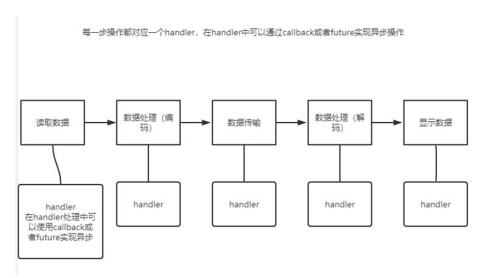
说明
在使用Netty进行编程时，拦截操作和转出入栈数据只需要提供callback或者利用future即可。这使得链式操作简单、高效，并有利于编写可重用的、通用的代码。
Netty框架的目标就是让你的业务逻辑从网络应用编码中分离出来
Future-Listener 机制
当Future对象杠创建的时候，处于非完成状态，调用者可以根据返回的ChannelFuture来获取操作执行的状态，注册监听函数来执行完成后的操作
常见的操作
通过isDone方法 来判断当前操作是否完成；
通过isSucess方法来判断已完成的操作是否成功
通过getCause方法来获取已完成的当前操作失败的原因
通过isCancelled方法来判断当前已完成的操作被取消的原因
通过addListener方法来注册监听器，当前操作已完成（isDone方法返回完成），将会通知指定的监听器；如果Future对象已完成，则通知指定的监听器。
小结 ：相比传统阻塞I/O，执行I/O操作后线程会被阻塞住，知道操作完成；异步处理的好处是不会造成线程阻塞，线程在I/O操作期间可以执行别的程序，在高并发的情形下会更加稳定和更高的吞吐量
Http模型 TestServer
1 2 3 4 5 6 7 8 9 10 11 12 13 14 15 16 17 18 19 20 21 22 23 24 25 26 27 28 29 30 31 32 package com.dean.netty.http;import io.netty.bootstrap.ServerBootstrap;import io.netty.channel.ChannelFuture;import io.netty.channel.nio.NioEventLoopGroup;import io.netty.channel.socket.nio.NioServerSocketChannel;public class TestServer {public static void main (String[] args) throws InterruptedException {NioEventLoopGroup bossGroup = new NioEventLoopGroup ();NioEventLoopGroup workerGroup = new NioEventLoopGroup ();try {ServerBootstrap serverBootstrap = new ServerBootstrap ();new TestServerInitializer ());ChannelFuture channelFuture = serverBootstrap.bind(6969 ).sync();if (channelFuture.isSuccess()){"绑定成功！" );else {"绑定失败！" );finally {
TestServerInitializer
1 2 3 4 5 6 7 8 9 10 11 12 13 14 15 16 17 18 19 20 21 package com.dean.netty.http;import io.netty.channel.ChannelInitializer;import io.netty.channel.ChannelPipeline;import io.netty.channel.socket.SocketChannel;import io.netty.handler.codec.http.HttpServerCodec;public class TestServerInitializer extends ChannelInitializer <SocketChannel> {@Override protected void initChannel (SocketChannel ch) throws Exception {ChannelPipeline pipeline = ch.pipeline();"myHttpServerCodec" ,new HttpServerCodec ());"MyHttpServerHandler" ,new TestHttpServerHandler ());
TestHttpServerHandler
1 2 3 4 5 6 7 8 9 10 11 12 13 14 15 16 17 18 19 20 21 22 23 24 25 26 27 28 29 30 31 32 33 34 35 36 37 38 39 40 41 42 43 44 45 46 47 48 49 50 51 52 53 54 55 package com.dean.netty.http;import io.netty.buffer.ByteBuf;import io.netty.buffer.Unpooled;import io.netty.channel.ChannelHandlerContext;import io.netty.channel.SimpleChannelInboundHandler;import io.netty.handler.codec.http.*;import io.netty.util.CharsetUtil;import java.net.URI;public class TestHttpServerHandler extends SimpleChannelInboundHandler <HttpObject> {@Override protected void channelRead0 (ChannelHandlerContext ctx, HttpObject msg) throws Exception {"````````" + this .hashCode());HttpRequest httpRequest = (HttpRequest) msg;URI uri = new URI (httpRequest.uri());if (uri.getPath().equals("/favicon.ico" )){"过滤掉该请求 /favicon.ico" );return ;if (msg instanceof HttpRequest){"msg 类型 = " + msg.getClass());"客户端地址" + ctx.channel().remoteAddress());ByteBuf content = Unpooled.copiedBuffer("你好，我是服务器！" , CharsetUtil.UTF_8);DefaultFullHttpResponse httpResponse = new DefaultFullHttpResponse (HttpVersion.HTTP_1_1,"text/plain;charset=UTF-8" );
Unpooled类
Netty提供一个专门用来操作缓冲区（即netty的数据容器）的工具类
通过给定的数据和 字符编码返回一个ByteBuf对象，类似NIO的ByteBuffer但有区别
1 public static ByteBuf copiedBuffer (CharSequence string , Charset charset)
RPC
基本介绍
procedure call—远程过程调用，是一个计算机通信协议。该协议允许运行于一台计算机的程序调用另一台计算机的子程序，而程序员不需要额外的为这个交互作用编程
两个或多个应用程序都分布在不同的服务器上，他们之间的调用都像是本地方法一样
自己实现 Dubbo RPC
需求说明
dubbo底层 使用了Netty作为网络通讯框架，要求使用netty自己实现一个简单的RPC框架
模仿dubbo，消费者和提供者的约定和接口协议，消费者远程调用提供者的服务，提供者返回一个字符串，消费者打印提供者返回的字符串，底层网络通信采用Netty 4.1.20
设计说明
创建一个接口，定义抽像方法。用于消费者和提供者之间的约定。
创建一个提供者，该类需要监听消费者的请求，并按照约定返回数据
创建一 个消费者，该类需要透明的调用自己不存在的方法。内部需要使用Netty请求提供者返回数据
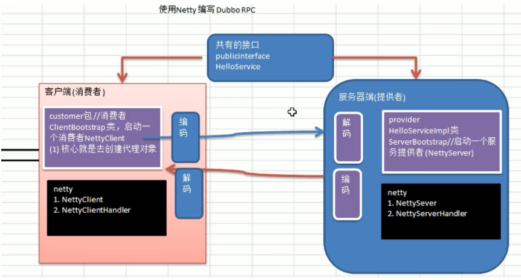